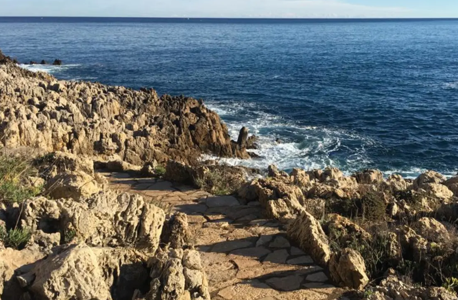

Vieil Antibes
Centre historique, AntibesCharmantes ruelles pavées, marchés provençaux et remparts face à la mer, parfaits pour une belle promenade.
Sélection de trois belles adresses pour profiter pleinement de la région.
Charmantes ruelles pavées, marchés provençaux et remparts face à la mer, parfaits pour une belle promenade.

Un des plus beaux sentiers côtiers de la Côte d’Azur, avec des vues magnifiques sur la Méditerranée.